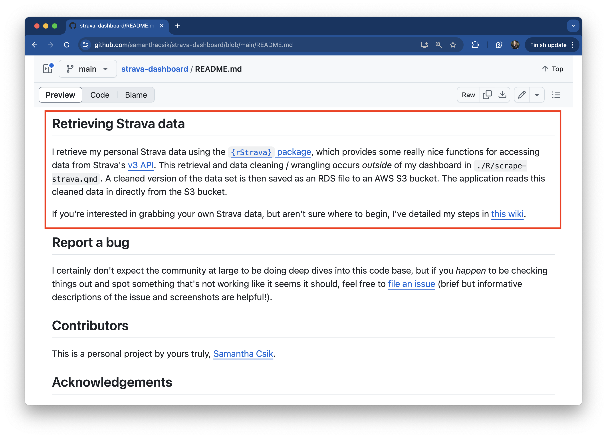

EDS 296: Data Science Portfolios
README Guidelines
November 1st, 2024
Reference the “official” README guidelines
These slides are adapted from the MEDS README Guidelines (mostly because it helps me stay on track while teaching ). Please be sure to reference the “official” guidelines document when you return to these in the future.
READMEs provide essential project info
- Date back to at least 1974 with the invention of PDP-10
- Text files that live in project directories (often the root directory)
- Include info about the software / product to users, developers, and / or contributors
- ALL CAPS because ASCII system sorts upppercase before lowercase letters (
lslists READMEs near the top) - GitHub displays a repo’s (root directory) README on its landing page
- written in Markdown
Some have suggested that the README name is a play on Lewis Carroll’s “Eat Me” and “Drink Me” scene from Alice’s Adventures in Wonderland. Image source: 150 years of “Alice in Wonderland”
You should always include a README
GitHub makes this easy! Check the “Add a README file” box each time you create a repo on GitHub:
If you’re creating a repo locally first, add a README to your project’s root directory using the command, touch README.md (in the Terminal), or click New File > Text File > type README.md > OK (in RStudio’s Files pane).
What you include in a given README will look different depending on the project.
But there are some guidelines you should follow…
Things you should always include in your repo READMEs
These 6 core elements are required for all MEDS-related homework assignments and projects.
- A short, but descriptive title
- A brief explanation of the repository’s purpose
- A concise description of what’s housed in the repository
- Details regarding data access
- A list of authors or contributors (for collaborative work)
- References / acknowledgements
Let’s work on adding these elements to an existing MEDS assignment repository. Navigate to your chosen repo now.
(Example screenshots from https://github.com/samanthacsik/strava-dashboard)
1. A short, but descriptive title
A README’s title is set to the repository name by default - change this!
By default, this README title was strava-dashboard (the name of the repo) – here, I’ve updated it to something a bit more descriptive.
1. A short, but descriptive title
Update your repo’s README title, then share with your neighbor
01:00
2. A brief explanation of the repository’s purpose
Paragraphs or a bulleted list are both acceptable options. You may also include an image or logo that represents the project.
In this example, I include a bulleted list that describes the (personal and professional) motivations for this project.
2. A brief explanation of the repository’s purpose
Add a brief description to your repo’s README, then share with your neighbor
03:00
3a. A concise description of what’s housed in the repository
This includes information about the repository structure or file organization.

A repo “map” of the folder structure and important / necessary files for making this shiny app run.
Open and close a code block with three backticks at the start and end. Use the pipe, |, along with these (somewhat odd) characters, ├── & └──, to construct a folder / file map of your repo.
An aside: remember to organize your files!
This is also a reminder to create an intuitive folder structure within your repository! Reorganize files as needed / appropriate. Here’s one example of an intuitive repo structure – this will vary depending on your project:
3b. A concise description of what’s housed in the repository
Add a section to describe the contents of your repo (you may choose to create a repo map), then share with your neighbor.
04:00
4a. Details regarding data access
Any necessary information on where data lives (e.g. is it housed in the repo, on a server, in a library / package etc.) and how to access it in order to run the code
Information on what tools (i.e. {rStrava}) I used to scrape my data, where that data retrieval / wrangling occurs, and where I save my cleaned data to. Also note that I mention a wiki – more on that soon.
4a. Details regarding data access
Add any important information regarding your data source(s) / access, then share with your neighbor.
03:00
5a. A list of authors or contributors (for collaborative work)
Consider hyperlinking collaborators’ GitHub profiles or other professional profile
A not totally necessary contributors section (I’m the only contributor, so far).
5b. A list of authors or contributors (for collaborative work)
If you chose a repository that contains collaborative work, add authorship information. Then share with your neighbor.
02:00
6a. References / acknowledgements
Add references in an appropriate, consistent format (including links). Don’t forget to add references for data sets too!
My acknowledgements section includes links to a variety of blog posts, articles, and software that I referenced / used while building my dashboard. It also, importantly (though not at all necessary), includes a pup pic.
6b. References
Add any necessary references / acknowledgements, then share with your neighbor.
02:00
Keep READMEs as concise as possible
“The lack of a README is a powerful red flag, but even a lengthy README is not indicative of there being high quality. The ideal README is as short as it can be without being any shorter. Detailed documentation is good – make separate pages for it! – but keep your README succinct.”
-Kira Oakley in her article, Art of README
Use wikis to share long-form documentation
From GitHub Docs:
“You can use your repository’s wiki to share long-form content about your project, such as how to use it, how you designed it, or its core principles”
- move any documentation-style info from your README to a wiki, as appropriate
- you can link to wiki pages from your README
- each wiki page should focus on a single topic
- add a wiki by clicking Wiki > Create the first page (creates landing page) > then add additional pages
Up next, account-level READMEs
READMEs aren’t just for repositories – we can create account-level READMEs to introduce individual users or organizations:
A GitHub profile README
A organization README
Take a Break
~ This is the end of Lesson 1 (of 2) ~
05:00